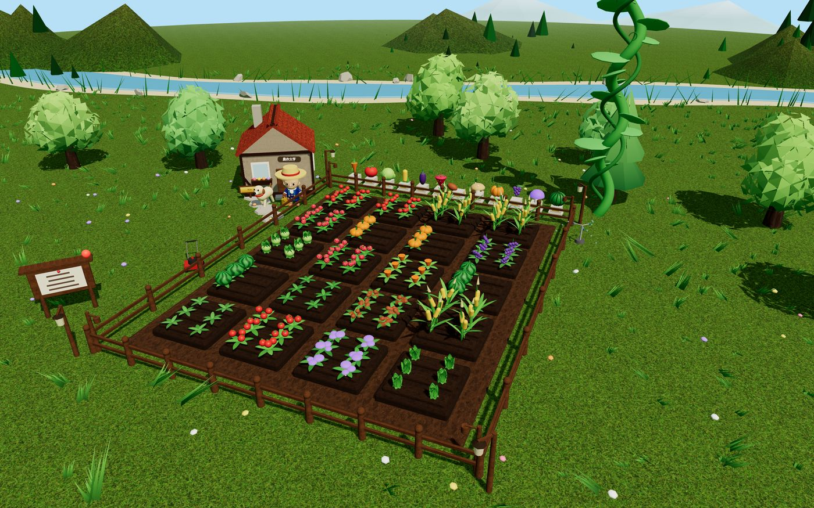
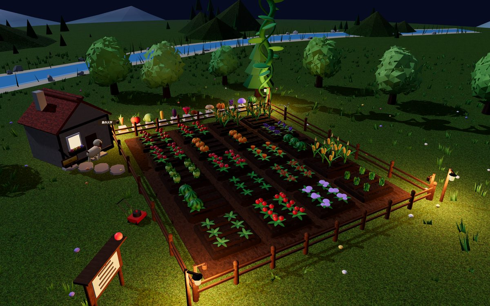
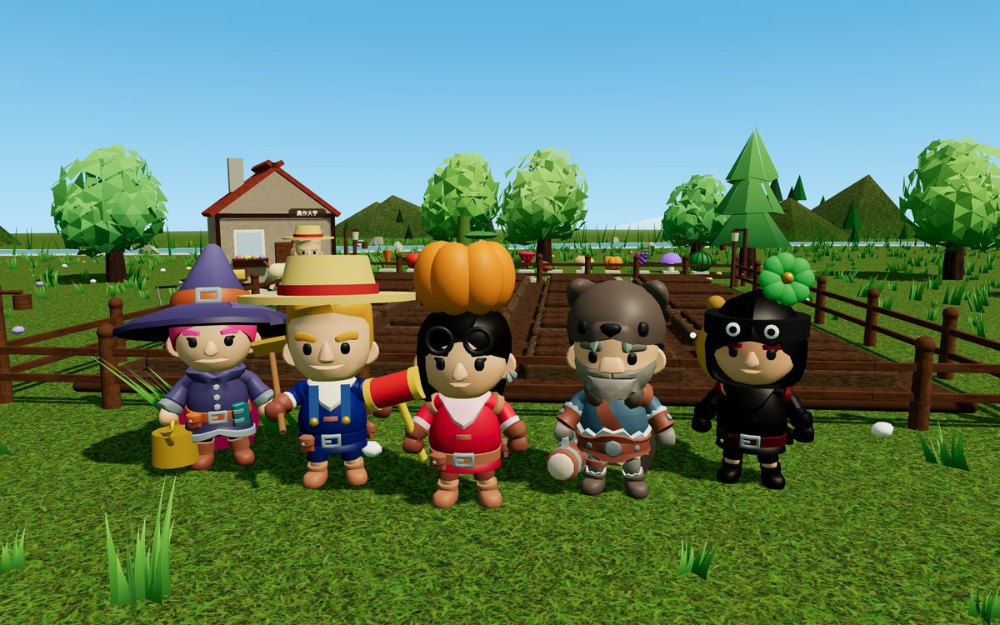
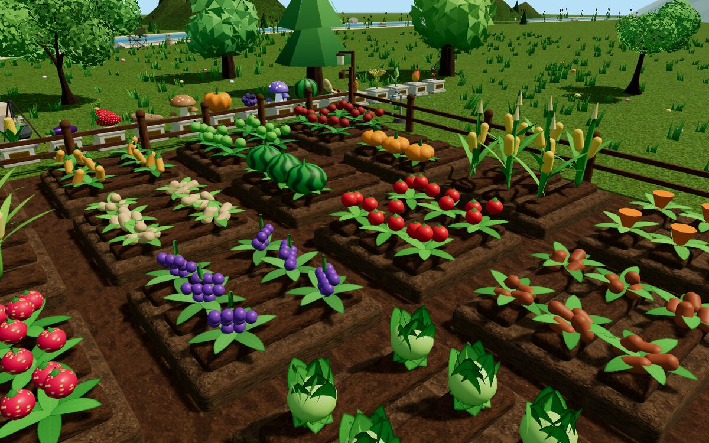
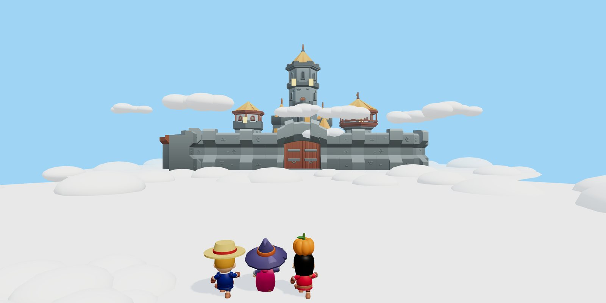

告示板
- 3D 低多邊形農場，白天夜晚跟著真實時間走——晚上田邊會點起油燈，天上有星星
- 十多種作物，有的快、有的慢，有的賣多少錢全看運氣
- 每個人都有自己的小人：換臉、換髮色、換衣服戴帽子，穿去朋友家串門子新
- 加好友、互相拜訪：可以幫忙澆水除草除蟲，也可以動點偷菜的歪腦筋
- 主人在家的時候偷菜，有機會被當場抓到
- 田地空著可以出租給朋友種，收成時你能抽一點租金
- 做過的事都會變成成就；每週排行榜和成就榜，看誰最勤勞（或最手賤）新



還沒拆開的種子包
農場裡還藏著一些事。每包只透露一點點，剩下的自己進去找。
抬頭看看。
有一顆豆子，種下去不會長在田裡。

它會一直往上長，長到雲上面。朋友來幫忙澆水、施肥，它就長得快一點。
至於上面住著誰——要上去才知道。記得找朋友一起。
豆子從哪裡來？那包神秘的種子，也許知道。
怎麼開始
-
登入
用 Google 帳號登入，不用另外註冊
-
種下第一株作物
點空地選種子，記得澆水，等它長大再回來收成
-
找朋友一起玩
把好友碼給朋友；還沒有朋友在玩的話，告示板上也找得到鄰居
常見問題
要付錢嗎？
免費免費，也沒有廣告。後續可能會新增一些無傷大雅的收費項目，畢竟伺服器的運作需要經費。
要下載 App 嗎？
不用。手機或電腦的瀏覽器打開網址就能玩。
手機玩久了會不會很燙、很耗電？
遊戲會自動認出手機，降低畫面解析度和更新頻率；一段時間沒操作會再更省一點，需要反應的時候才全速跑。
一個人玩得起來嗎？
可以，自己種田、養狗、存錢、打扮小人都很完整。不過有朋友會熱鬧很多——互相幫忙，也互相提防；有些地方，也是一群人去比較好玩。
我沒上線的時候，作物會被偷光嗎？
不會被偷光，每塊田能被拿走的有限。不過成熟太久沒收也是會壞的，有空還是常回來看看。